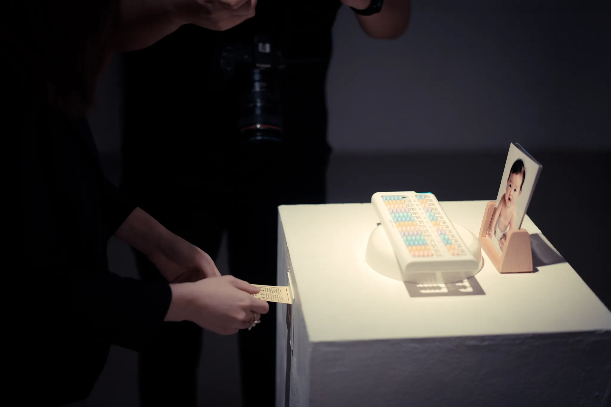
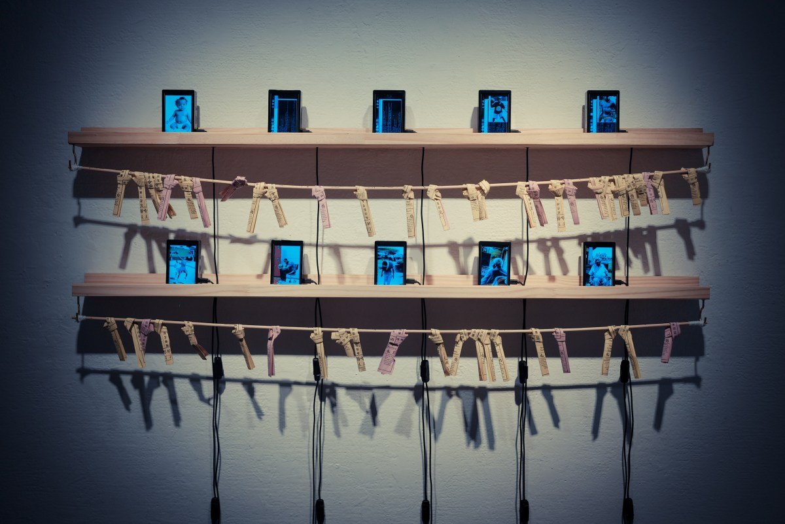
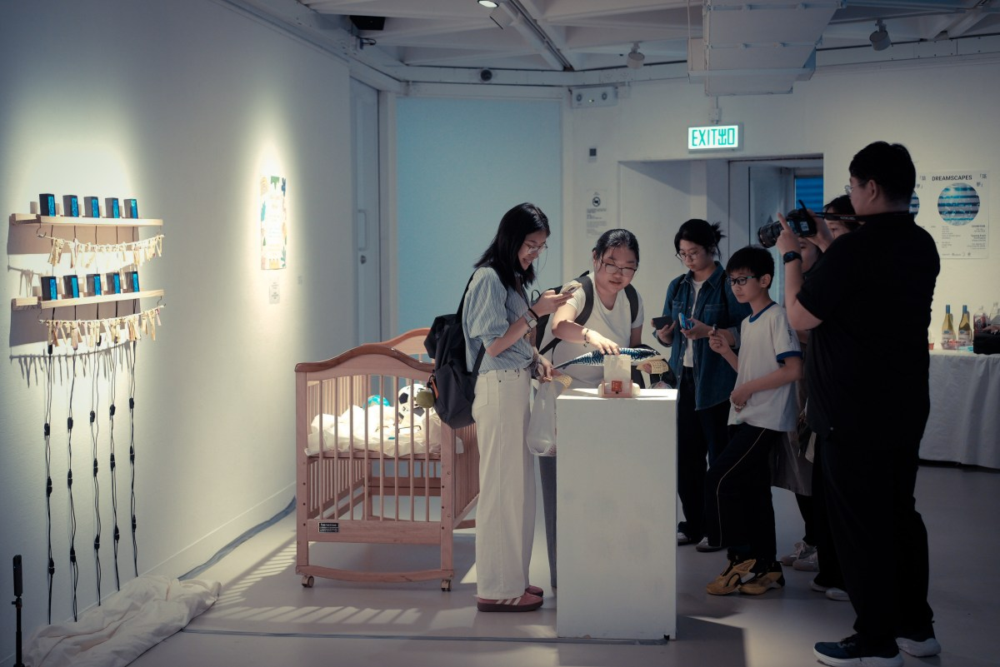
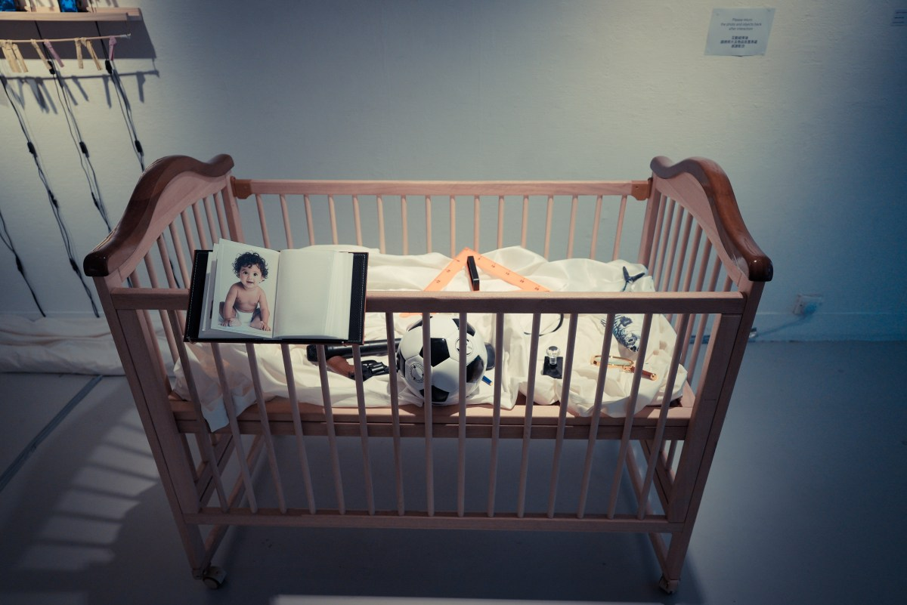
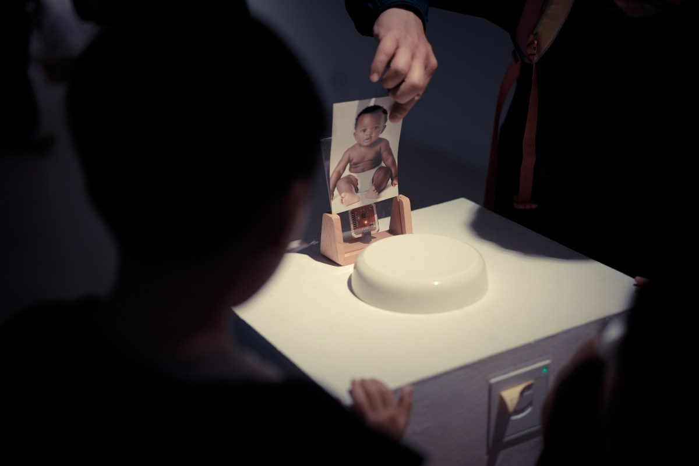
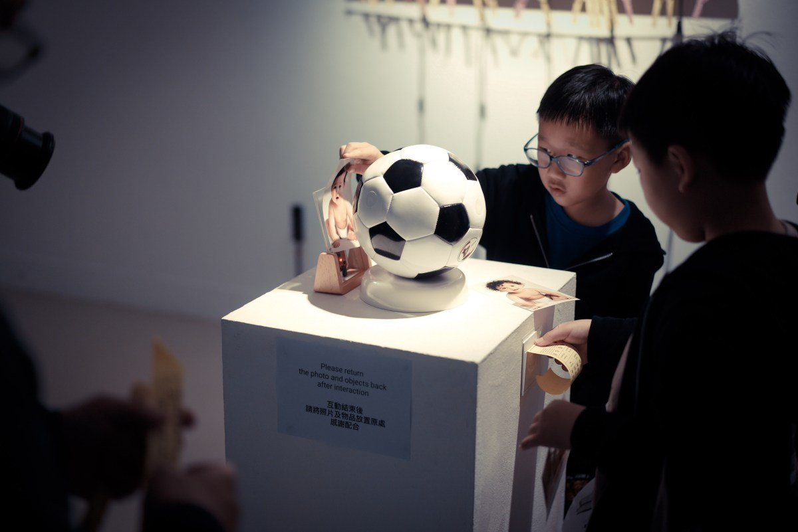
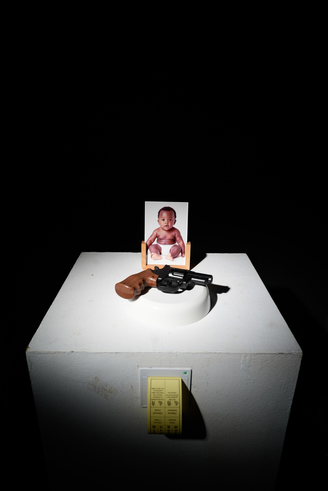

Cradle of Success
Interactive Art Installation
2025 / 2026
Cradle of Success is an interactive installation exploring how generative AI amplifies wishful thinking and social stereotypes through fortune-telling. Visitors select a baby photograph and a toy associated with a possible career. AI then generates videos imagining the baby's future across different life stages, alongside printed fortune slips.
The predictions expose racial and gender biases embedded in AI-generated futures, inviting visitors to question whose expectations these visions reflect. Drawing on Japanese Omikuji practice, visitors tie the fortune slips to a shrine-like structure to symbolically cleanse these biased predictions.
Exhibitions
- ACM Creativity & Cognition Art Gallery, Central Saint Martins, UK
13 to 17 July 2026 - Dreamscapes, Hong Kong Arts Centre, Hong Kong
27 February to 10 March 2026 - Singing Waves Gallery, School of Creative Media, City University of Hong Kong
19 to 26 December 2025
Collaborated with RAY LC, Bowen Liu, Lucy Long Ling
Artistic Director: RAY LC
Artist and Technical Lead: Bowen Liu
Artist and Designer: Lucy Long Ling
Curator and Producer: LIU Sijia Star
Project Website: Cradle of Success
Related Publication: Cradle of Success: Fortune-Telling Stereotypes and Wishful Futures in the Age of Generative AI (C&C '26 Artwork)
LC R., Liu B., Ling L., Liu S.






